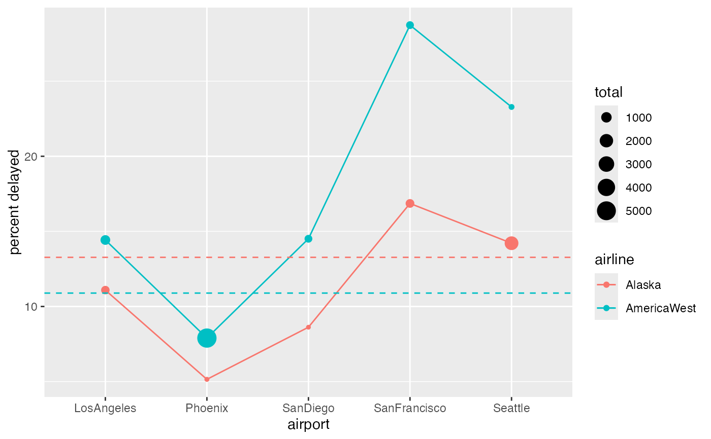

Flights categorized by destination city, airline, and whether or not the flight was on time.
Format
A data frame with 11000 observations on the following 3 variables.
- airport
a factor with levels
LosAngeles,Phoenix,SanDiego,SanFrancisco,Seattle- result
a factor with levels
Delayed,OnTime- airline
a factor with levels
Alaska,AmericaWest
Source
Barnett, Arnold. 1994. “How numbers can trick you.” Technology Review, vol. 97, no. 7, pp. 38–45.
Examples
tally(
airline ~ result, data = AirlineArrival,
format = "perc", margins = TRUE)
#> result
#> airline Delayed OnTime
#> Alaska 38.89752 33.71087
#> AmericaWest 61.10248 66.28913
#> Total 100.00000 100.00000
tally(
result ~ airline + airport,
data = AirlineArrival, format = "perc", margins = TRUE)
#> , , airport = LosAngeles
#>
#> airline
#> result Alaska AmericaWest
#> Delayed 11.091234 14.426634
#> OnTime 88.908766 85.573366
#> Total 100.000000 100.000000
#>
#> , , airport = Phoenix
#>
#> airline
#> result Alaska AmericaWest
#> Delayed 5.150215 7.897241
#> OnTime 94.849785 92.102759
#> Total 100.000000 100.000000
#>
#> , , airport = SanDiego
#>
#> airline
#> result Alaska AmericaWest
#> Delayed 8.620690 14.508929
#> OnTime 91.379310 85.491071
#> Total 100.000000 100.000000
#>
#> , , airport = SanFrancisco
#>
#> airline
#> result Alaska AmericaWest
#> Delayed 16.859504 28.730512
#> OnTime 83.140496 71.269488
#> Total 100.000000 100.000000
#>
#> , , airport = Seattle
#>
#> airline
#> result Alaska AmericaWest
#> Delayed 14.212488 23.282443
#> OnTime 85.787512 76.717557
#> Total 100.000000 100.000000
#>
AirlineArrival2 <-
AirlineArrival %>%
group_by(airport, airline, result) %>%
summarise(count = n()) %>%
group_by(airport, airline) %>%
mutate(total = sum(count), percent = count/total * 100) %>%
filter(result == "Delayed")
#> `summarise()` has grouped output by 'airport', 'airline'. You can override
#> using the `.groups` argument.
AirlineArrival3 <-
AirlineArrival %>%
group_by(airline, result) %>%
summarise(count = n()) %>%
group_by(airline) %>%
mutate(total = sum(count), percent = count/total * 100) %>%
filter(result == "Delayed")
#> `summarise()` has grouped output by 'airline'. You can override using the
#> `.groups` argument.
gf_line(percent ~ airport, color = ~ airline, group = ~ airline,
data = AirlineArrival2) %>%
gf_point(percent ~ airport, color = ~ airline, size = ~total,
data = AirlineArrival2) %>%
gf_hline(yintercept = ~ percent, color = ~airline,
data = AirlineArrival3, linetype = "dashed") %>%
gf_labs(y = "percent delayed")
